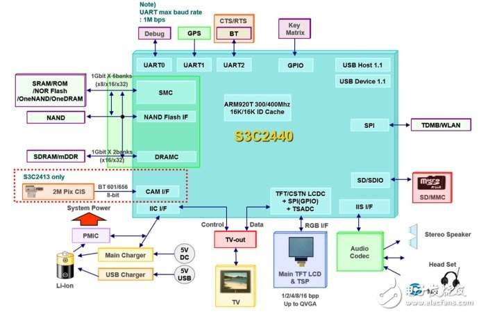

Introduction
ARM (Advanced RISC Machine) is a family of RISC architectures for processors.
History
- 1978: Hermann Hauser and Chris Curry founded CPU (Cambridge Processing Unit) company.
- 1979: Changed name to Acorn.
- 1985: Roger Wilson and Steve Furber designed a 32-bit, 6MHz RISC processor ARM (Acorn RISC Machine).
- 1990: Changed to ARM (Advanced RISC Machine) with Apple.
- Smartphone market significantly increased the importance of ARM.
ARM architecture
- Instruction Set Architecture: define the processor's instruction set. ARMv1, ARMv2, ... ARMv7, ARMv8.
- Micro-Architecture: define the pipeline length, level of cache, performance and power. ARM1, ARM2,... ARM11, ARM Cortex-A/R/M. Each micro-architecture is based on a specific ISA and has different hardware configuration. e.g. ARM11 core family consists of 1136, 1156...
- Implementation: Manufactures, such as Microchip, STMicro, buy the lisences from ARM to produce the real chips. These chips use the ARM core and manufacture-specific functions. e.g. BCM2835 is an implementation of ARM11.
* The architecture defines what the CPU must do. The Micro-architecture and Implementation of the CPU sit on top of the architecture, and determine how it meets the architectural contract.[4]
Term
- die: A die is one piece of IC on the wafer(晶圆).
- SCM (Single chip module): A chip package with only one die.
- MCU (Microcontroller unit): a small computer on a single integrate circuit.
- SoC (System on a chip): An IC that integrates all components of a computer or other electronic systems. It contains processor, timer, ADC, inerrupt controller and other peripherals. It may also contains GPU, Camera module, Wi-Fi module, and bluetooth.
e.g. S3C2440.

- OEM (Original equipment manufacture): A company that produces products that are designed by other companies.(代工厂:e.g.富士康)
- ODM (Original design manufacturer): A company that designs and prduces products that will be rebranded by another firm for sale.
- OBM (Original brand manufacture): A company that designs, produces, and sale its own products with its own brand.